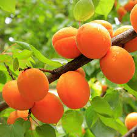
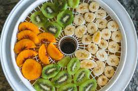
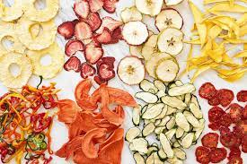

At Bongani Fruits, we're passionate about delivering nature's goodness straight to your doorstep. We specialize in offering a wide array of premium dried fruits that redefine snacking with their unbeatable taste and health benefits.
Bongani Fruits began with a simple yet powerful vision, to provide individuals and families with a delectable and nutritious snacking option that aligns with their active lifestyles. The journey started with 4 South African entrepreneurs that saw an opportunity to turn locally provided fruits into a sustainable snack, as they say local is lekker. We have committed ourselves to source the finest, sun-ripened fruits across the country and transform them into an irresistible, wholesome snack.
Value Proposition

What sets Bongani Fruits apart is our unwavering dedication to quality. Each piece of fruit undergoes a meticulous drying process that preserves its natural flavours and nutrients. We take pride in offering products that are free of additives and preservatives, ensuring that every bite bursts with the organic essence of the fruits.
Our dried fruits are not just delicious, they are also your partners in wellness. Packed with vitamins, minerals and fibre. They make for a guilt free snacking choice. Whether you are powering through a busy day or fuelling for an adventure, Bongani Fruits are the perfect companions.
Sustainability
As stewards of the environment, we are committed to sustainable practices. Fruits are sourced responsibly, supporting local farmers whenever possible. The drying process uses the pairing of solar dryers together with air dehydrators to ensure the products reach optimal crispness whilst reducing the environmental impact. With Bongani Fruits, you can enjoy natures bounty whilst contributing to a healthier planet.

Join the Experience

We invite you to savour the taste of nature, on dried fruit at a time. Whether you are indulging in the sweet chewiness of dried pineapples or the zing and tang of a lemon, Bongani fruits offers a variety of flavours to be explored.
You can order online, shopping with us is convenient and easy. Browse our online selection of dried fruits and let us take care of the rest. We will have your favourite snack delivered to your doorstep, ready to satisfy your cravings.